the starting point
RateMySchedule started as a 24-hour build at SteelHacks XI, where it won Best Pitt-Inspired Demo. The scoring logic held up: it graded a schedule on walking time, professor quality, and credit load, then had AI write an encouraging report card. But 24 hours buys working logic, not a considered interface. I came back to it on my own to redo the whole thing, this time as a real product with a design system underneath it.
the audit
I walked through the original flow the way a stressed sophomore would: late at night, on a phone, three days before enrollment. A few things stood out.
The schedule file already listed every class, yet the app still asked students to type each professor and credit count by hand on a separate screen. The three steps felt like three disconnected pages. And the report card put the grade, the category scores, and the explanation all at the same volume, so the thing students actually came for was buried. The whole layout also assumed a laptop.


The original three screens: upload, a manual entry form, and a dense report card.
designing a system, not just screens
Instead of redrawing three screens, I rebuilt the interface as an atomic design system. Every screen is assembled from the same small parts, so the visual language stays consistent and the product is easy to extend later. I worked up from the smallest pieces to full layouts: atoms, then molecules, then organisms, then templates.
the foundations
Color, type, spacing, radius, buttons, inputs and steppers, icons, and the letter-grade and icon tiles that the whole report card is built on. Every later piece pulls from these.
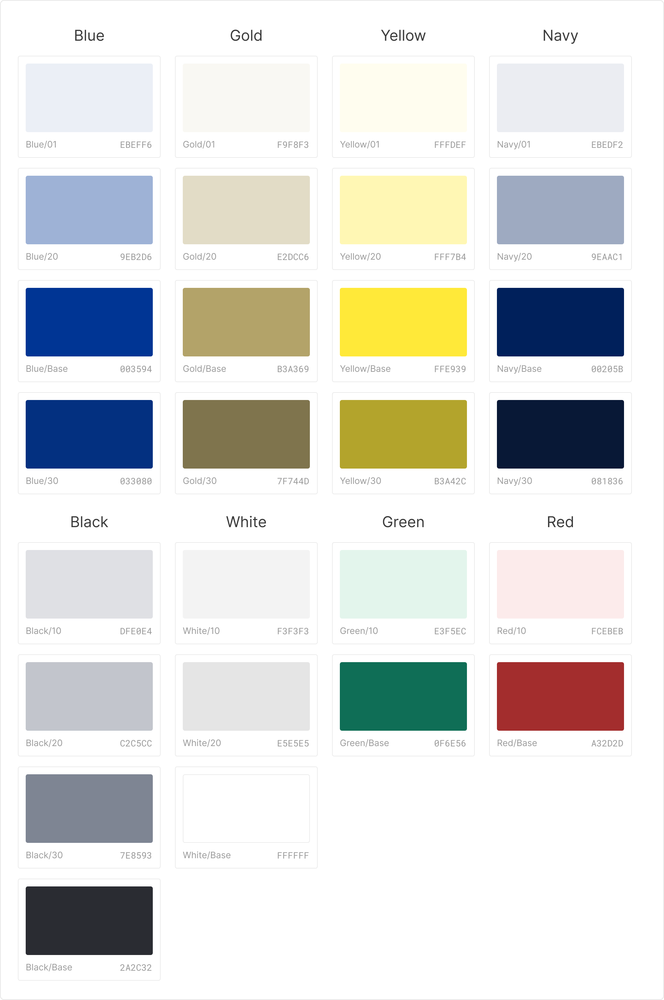
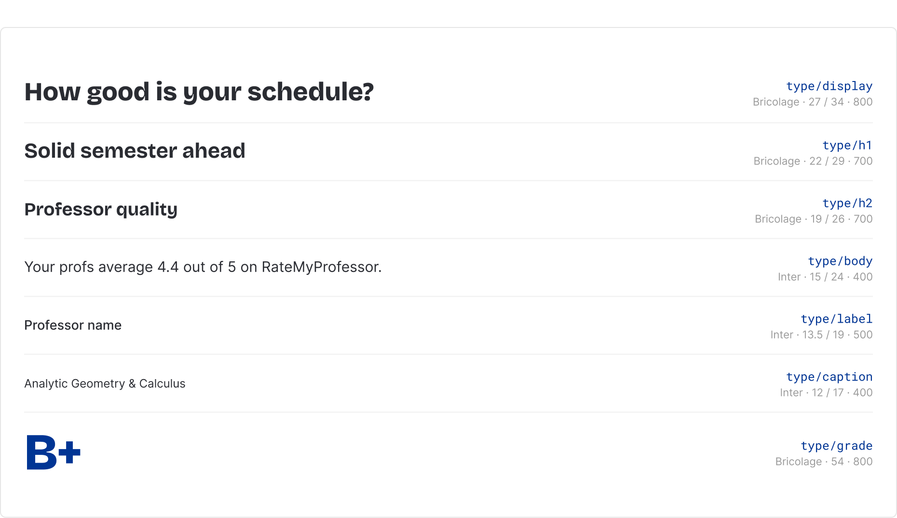
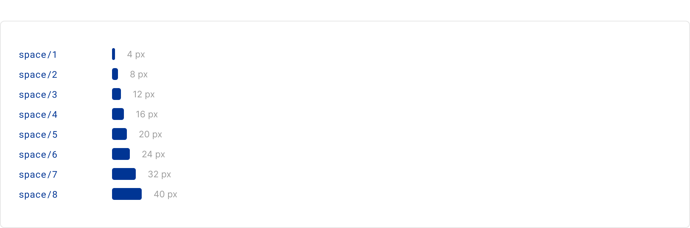
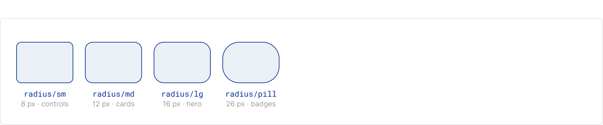
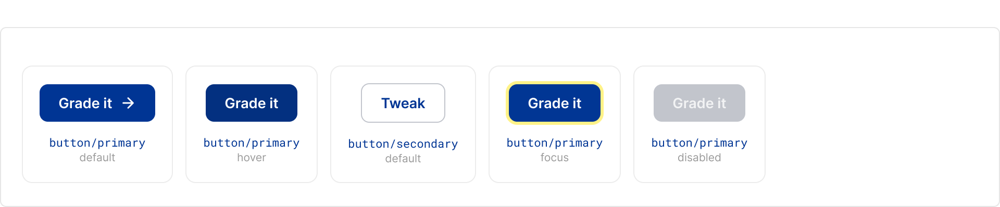
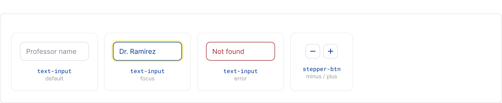
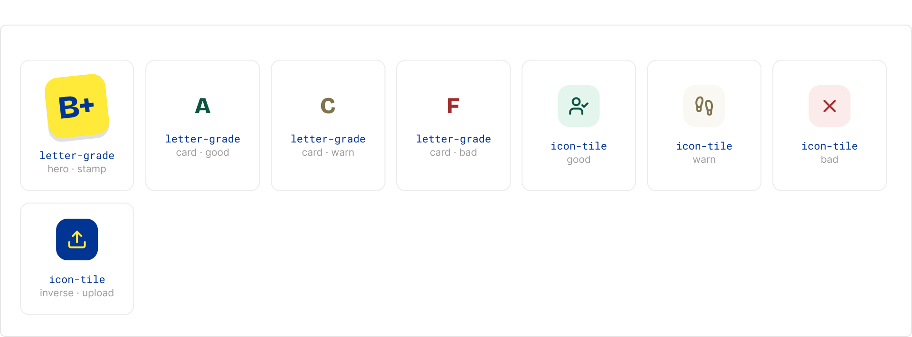
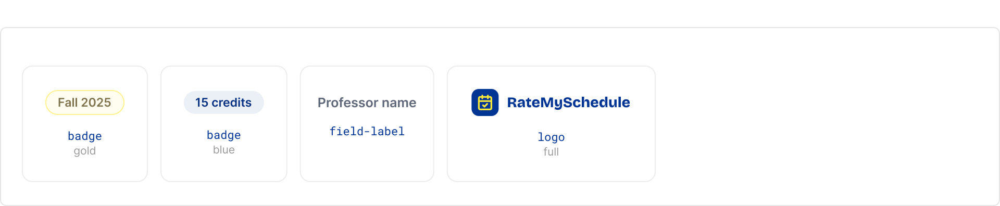
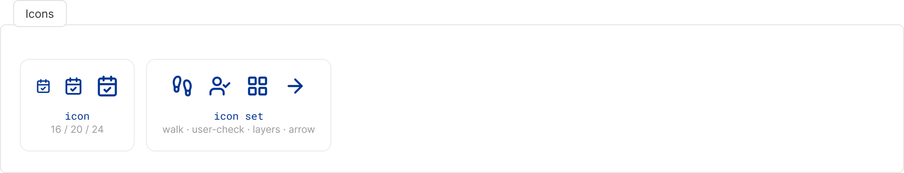
small combinations
Atoms grouped into the smallest useful pieces: a class row, the upload dropzone, the step tabs, the credit stepper with its feature chip, and the grade-category card.
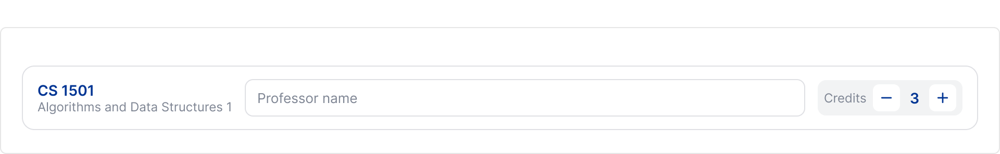
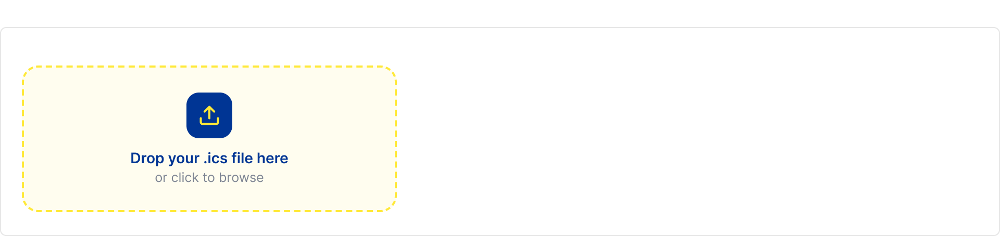
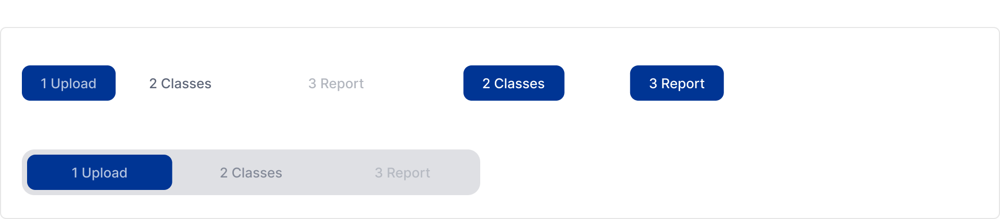
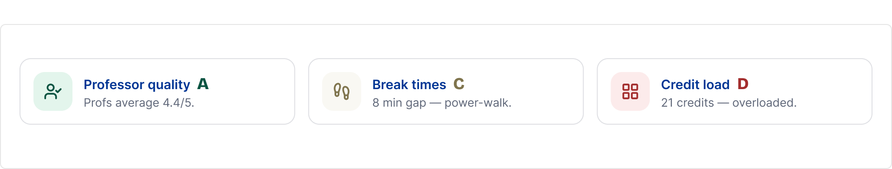
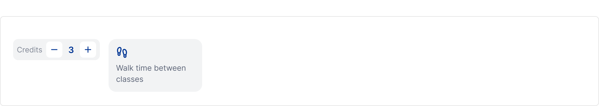
full sections
Molecules assembled into the real sections of the product: the top nav, the upload panel, the class list, the grade hero, and the report breakdown.
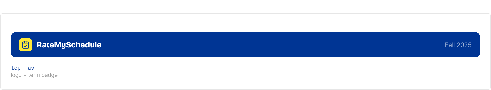
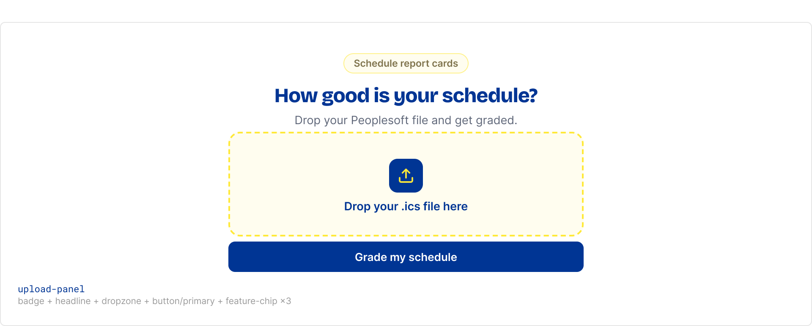
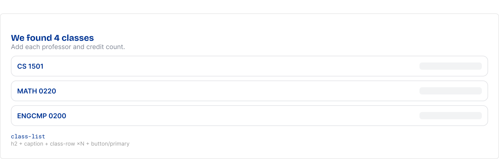
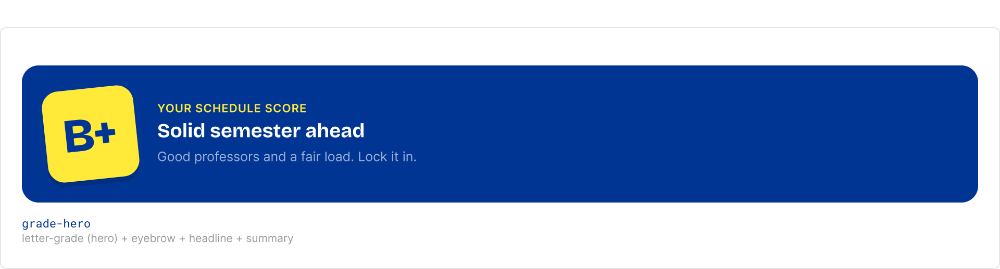
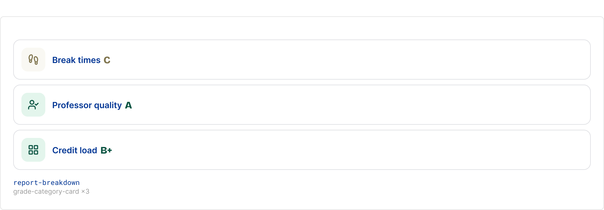
assembled layouts
The organisms placed into full screen layouts, where the flow and spacing get resolved before the final visuals.
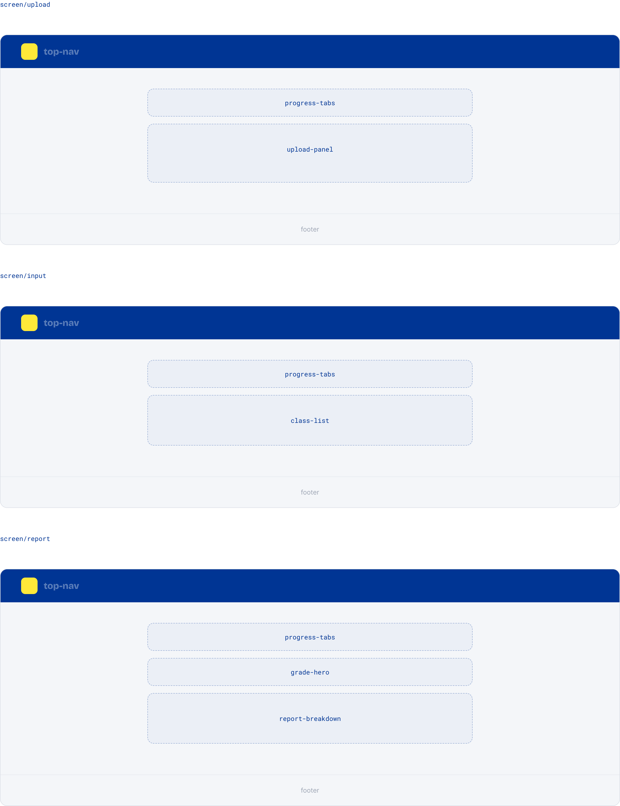
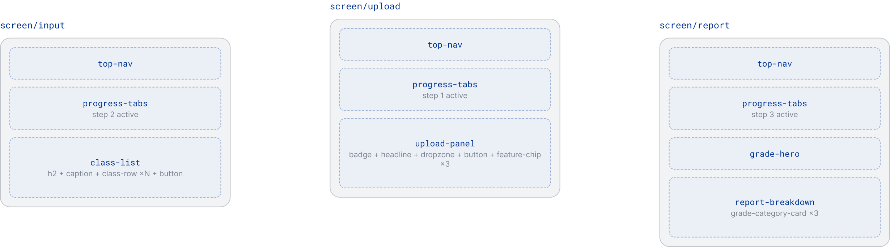
the redesigned screens
Where the system lands. The new flow is one continuous track with a visible progress tracker, prefilled classes so students confirm instead of type, and a report card led by the grade with the reasoning underneath.
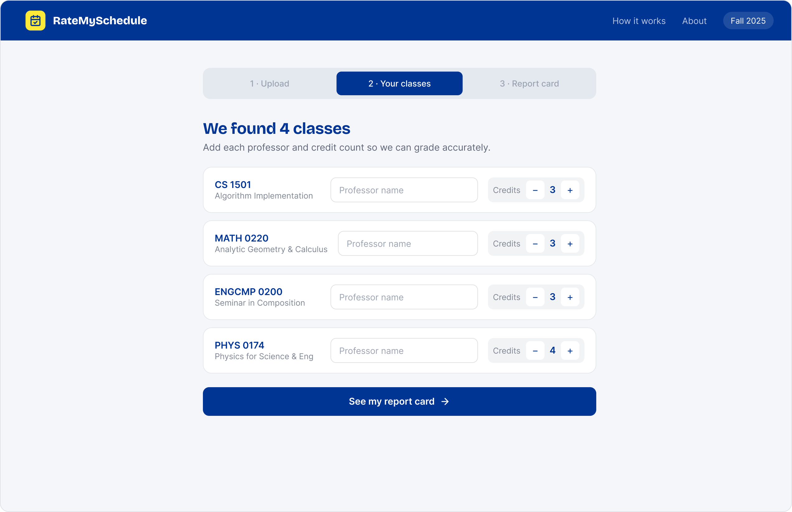
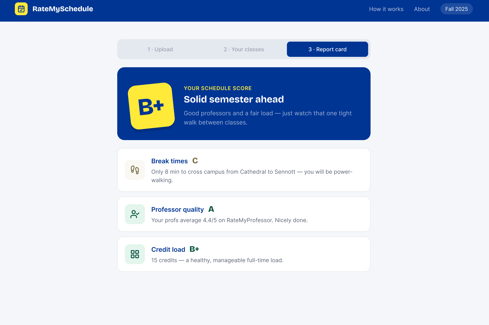
And because registration-week panic usually happens on a phone, the whole thing is designed mobile-first.
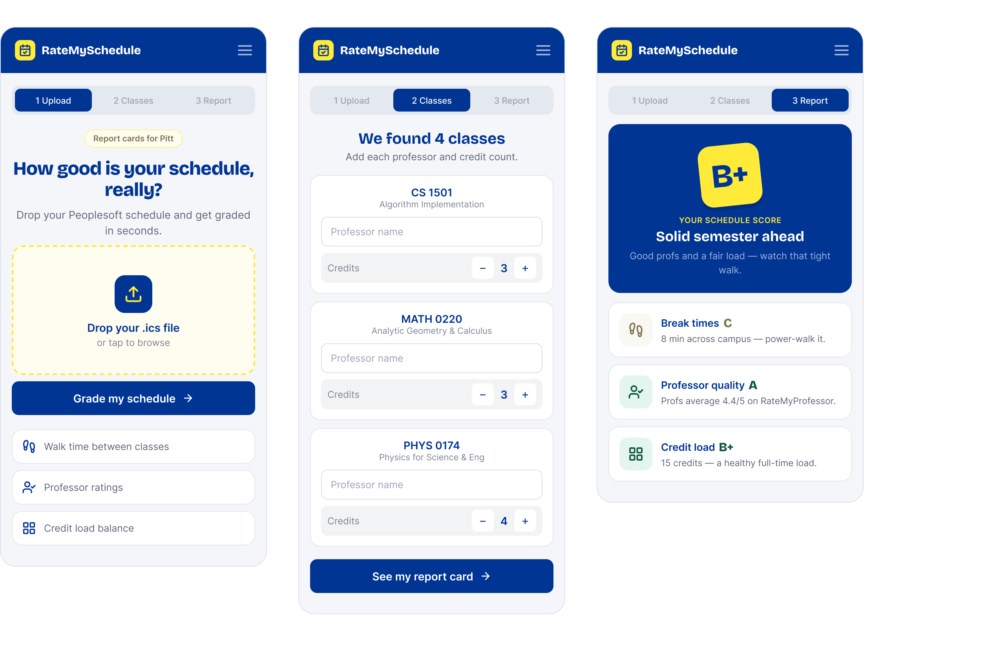
The same three steps on mobile.
before & after
The clearest change is the report card: from a flat wall of text to a layout led by the grade, with a scannable breakdown underneath.
what i learned
Redesigning something I'd already shipped was harder than starting from a blank file. The biggest shift was building a system instead of screens. Once the atoms and molecules existed, the actual screens came together fast and stayed consistent, and I could change one token and watch it update everywhere. Most of what made the original feel rough wasn't the scoring logic. It was how much work the interface pushed onto the student, and how little the pieces agreed with each other.